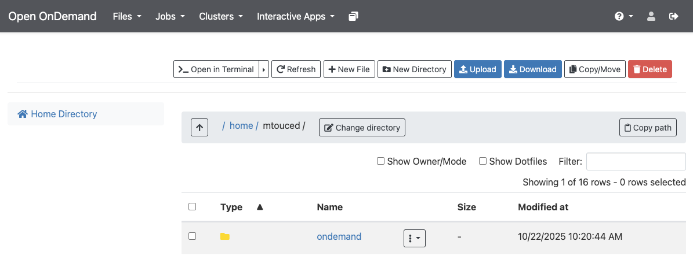

BRC Documentation: Introduction to Hazel-HPC
01. First steps in Hazel HPC
Set up an account
Request access from your supervisor and in the mean time read and understand Acceptable Use Policy. Obtain your UnityID credentials and ensure you have VPN access if working off-campus.
Log in
- Web browser (OnDemand): https://servood.hpc.ncsu.edu
- Terminal: To connect to the shared HPC login nodes, open a terminal window and type
ssh [UnityID]@login.hpc.ncsu.eduwhere user_name is the Unity ID.
To allow Hazel to open a window on a local machine, e.g., for GUI applications, X11 forwarding must be enabled by adding the -X option (i.e. ssh -X user_name@login.hpc.ncsu.edu). On macOS, install XQuartz to use X11 forwarding. When using MobaXterm, X11 is enabled by default.
Transfer files
OnDemand
Go to OnDemand
- Under
Files, using theUploadorDownloadbuttons to transfer. Make sure you navigate to the destination/source directory on cluster using theGo Tobutton before transferring files.

SCP
For transferring a single file in one direction. Open a terminal on your local machine, and without login into the HPC do:
# Local to HPC
$ scp filename [UnityID]@login.hpc.ncsu.edu:/rs1/researchers/[letter]/[name] local/path/to/stuff
# HPC to local
$ scp [UnityID]@login.hpc.ncsu.edu:/rs1/researchers/[letter]/[name] local/path/to/stuffSFTP
To transfer multiple files or in multiple directions (local to HPC and viceversa) without needing to re-authenticate, or to be able to navigate the remote file system. From the local machine initiate an SFTP session:
$ sftp [UnityID]@login.hpc.ncsu.eduAt the prompt do:
sftp> cd /path/to/stuff
sftp> put filename
sftp> get filenameGlobus
Globus is a point to point file syncing platform. It is very useful for transfering large files or large numbers of small files, since it allows for bacground scheduled transfers. See our Globus-ncsu tutorial to learn more about Globus and how to use it with the NCSU Hazel HPC.
Useful commands
System and user info
- Check queues you have access to:
$ bqueues -u [UnityID] - Check the groups you belong to (first one is your default):
$ groups - To see what node you are in:
$ hostnameor$ echo $HOSTNAME
Storage
- Check size of the directory you are in:
$ du -sh .> Important for checking pipeline output size - Check size of files in a directory:
$ du -sh [pathtodirectory]/* - Check how much space is being used in your home directory:
$ quota - Check space allocations for your group:
$ quota -s -g group_name - Check files in reversed time order (most recently modified at the end):
$ ls -lrt
Software and resource info
- Find available modules:
$ module avail - Find path to executable:
$ wich [executablename]
Resources
- Getting started on Hazel: https://hpc.ncsu.edu/Documents/GetStarted.php
- Cluster status: https://hpc.ncsu.edu/Monitor/ClusterStatusMemory.php
- Support: oit_hpc@help.ncsu.edu
- HPC-Henry2 moodle course on Reporter: https://moodle-projects.wolfware.ncsu.edu/course/view.php?id=6857
- Youtube channel for OIT with tutorial videos: https://www.youtube.com/@OITHPC
- To stay informed about Hazel-HPC news join the HPC Announcements Google Group